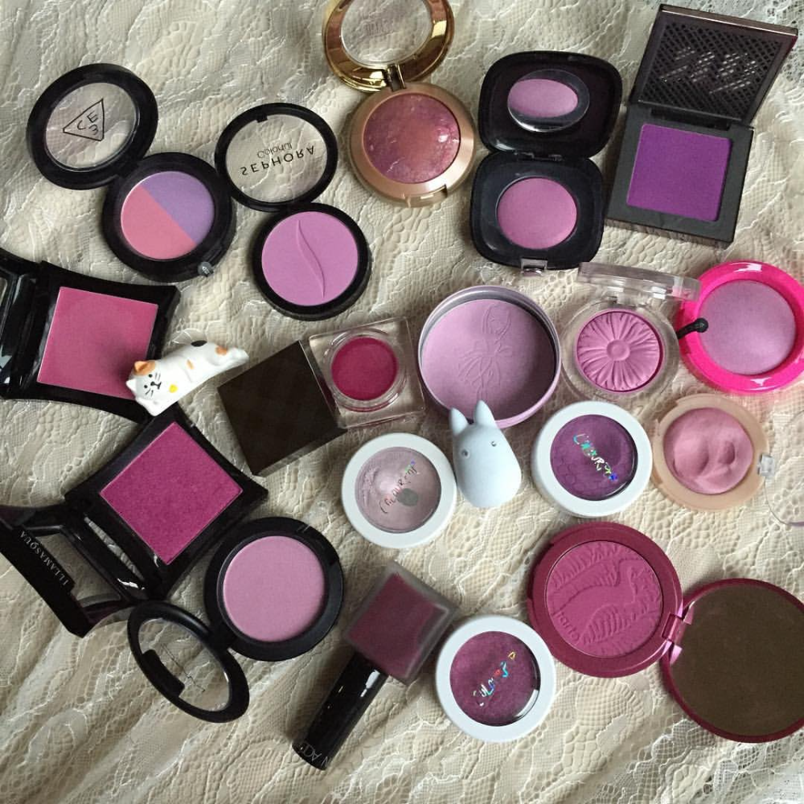

Fashion appears in clothing, footwear, accessories, makeup, hairstyles, lifestyle, and body proportions.
Furthermore, Fashion is an industry-supported expression. In the contemporary world,
people take fashion very seriously.
Fashion is something that has permeated every aspect of human culture

The right blush can brighten dull skin, create the illusion of cheekbones and make you look younger. “Blush helps bring warmth to the face and creates a healthy look,” says M.A.C Cosmetics senior artist Jane McKay. Here are our tips on how to achieve a radiant glow.
But the history of lipstick symbolism has had in its coffers everything from connotations of prostitution, witchcraft, sexuality, women's defiance and strength.
A highlighter is a makeup product that reflects light. “Typically, it's used on the highest points of the face and areas that you want to pop or stand out more,” says Shojaie. You can apply highlighter on your cheekbones, temples, brow bone, and even on your cupid's bow and along the bridge of your nose.
Foundation is used to help you build a base for your makeup and help you get an even tone on your skin, while concealer is used to cover up dark circles, dark spots, and any imperfections on your skin. Foundation has different kinds of coverage, while concealers are generally high coverage and are more intense.
Eye liner can be drawn above upper lashes or below lower lashes or both, even on the water lines of the eyes. Its primary purpose is to make the lashes look lush, but it also draws attention to the eye and can enhance or even change the eye's shape.